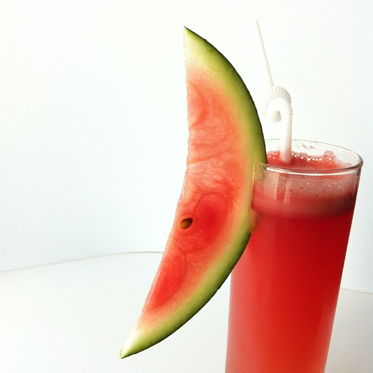

Watermelon-Juice |
| Rateing |
| prep time:5 minit |
| cook time:10 minit |
| total time:15 minit |
|  |
Ingredients: |
8 cup Fresh Watermelon (small pieces)
Sugar to taste (optional)
½ tsp Black pepper
½ tsp Black salt
2 cup Ice Cubes
Mint leaves for garnishing
|
Instructions: |
|
Remove seeds from watermelon.
Keep in a mixture jar.
Grind it till watermelon appears like liquid.
Sieve it properly in another bowl.
Mix black pepper and black salt in it. Add ice cubes, garnish with mint leaves a serve. |
video: |